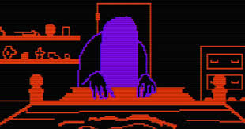
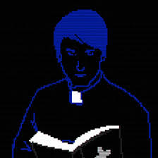

The game opens with a shot of John ward driving somewhere. He says to himself that what he’s about to do “has not been approved by the Vatican,” but he “has to finish what he started.” Once John stops his car, the player finds themself in a forrest of some sort, only given a vague map for navigation - the objective of the area is the house in the middle center of the map.
However, as the player navigates to the house, they will be attacked by a rake-like creature at random times. The player can fend off this demonic entity with John’s cross, making the creature run away. (If the player does this ten times, they will receive a note that gives information about the creature. The note’s content differs depending on what version of the game you play, but the version of the Chapter on itch.io is from a man known as father Gifford, asking a man named Father Garcia to “return Michael to his family. Michael, as you later learn is the Rake.)
The player will find a myriad of notes in the woods from exorcizing objects and areas with the cross, as well at some in the house. Most of these notes are written by a woman named Cindy Martin. These notes talk about the weird happenings in her house involving her two twin boys and her daughter, Amy. These notes, get more and more concerning as they’re found, with even a telling about how her twin boys found a deer carcass in the woods and were playing in it. The most important thing to note, however, is that Cindy mentions how Amy has been working at a “clinic” that Cindy’s religious friends don’t like at all.
This seems to be the Martin families house, so the player is left to wonder why no one is there. As the player explores the house, they end up finding themself in the basement, where satanic markings can be found making a pentacle on the floor. If the player makes John ward stand on the pentacle, a trail of demonic symbols gets closer and closer to John, until a cutscene plays where John hallucinates seeming Amy Martin at the foot of her bed, before waking up in her bedroom in the house, and saying “She is here.” A short battle commences against Amy, clearly a demonic entity, before John follows Amy through the house and battles with her again, collecting another note along the way. This note is supposedly from John to someone named “Molly,” and is implied to be a note written to her just before John left to go to this house, and yet somehow it’s all the way over here with him.
There is a second encounter with Amy after this that consists of three phases. Here’s the description of the phases from the wiki fandom page:
Phase One
Point your crucifix at Amy since she stands there motionlessly. Eventually, one Gray Demon emerges from outside the house and chases you. It floats around then pauses briefly before starting again. With some time, a second Gray Demon appears and does the same thing. Generally, move accordingly. You'll move to the second phase when a cinematic plays where Amy takes off her sheet, revealing her gaping red face hole.
Phase Two
Amy's attack pattern in this phase is near identical to her first encounter. She splits herself into four versions of herself and one of them is real. When you point your crucifix at the correct version, she doesn't teleport away like last time and gets damaged. After a couple of seconds, she tries to catch you off guard and ambushes you from the opposite direction, regardless of if you damage her or not. For example, if the real version is north, then she tries to ambush you from the south. Move accordingly and you'll be fine. Sometimes, a trail of satanic symbols gets closer to you. Point the crucifix at it since these symbols can kill. The third phase begins when a cinematic plays where a red, human arm emerges from her gaping face hole.
Phase Three
Amy is at her deadliest in this phase. A gigantic satanic pentagram manifests on the ground and Amy teleports to one of the points on the pentagram. For the first four times, Amy follows the trail of the pentagram three times and then releases a spiral of satanic symbols on the floor. Avoid these symbols since they can kill and point the crucifix accordingly. On the fifth time, Amy moves on the pentagram five times and then releases a Gray Demon. This demon doesn't follow you like the others but makes a beeline towards you. When the demon disappears, Amy stays immobile longer than usual so that gives you the time to damage her. Generally, watch her movement and count in your head how many times she moved since it's easy to get distracted and get killed. This phase ends when a cinematic plays where the human hand shrouds back into her face portal.
After these phases, Amy is severely weakened, and she throws herself out one of the attic windows while screaming. With Amy defeated, the player can now go back to the first floor, and now, John finds “a gun with one bullet.” This is where the player gets the choice of five possible endings.